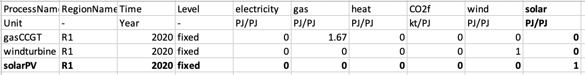
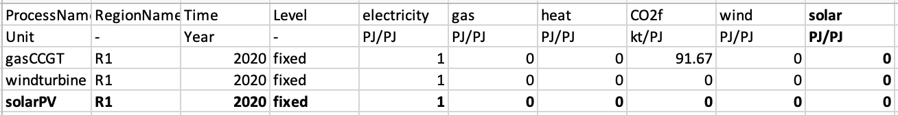
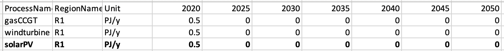
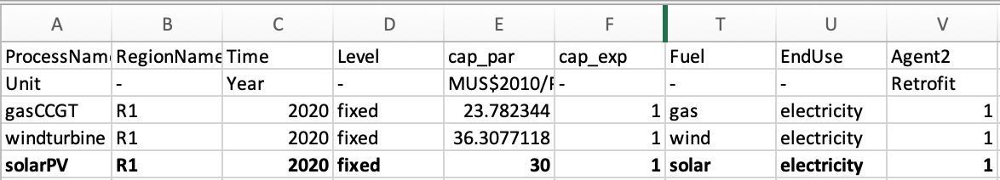
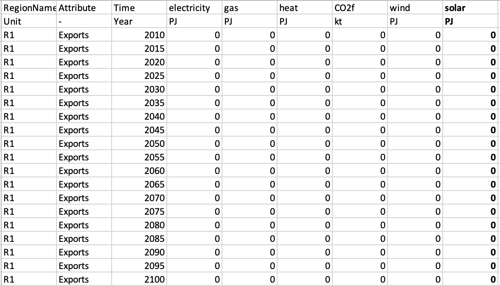
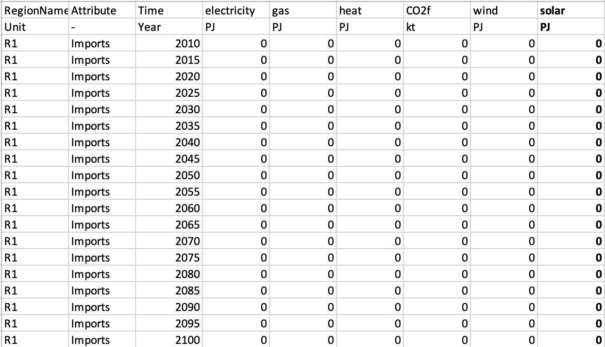
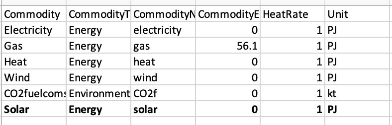
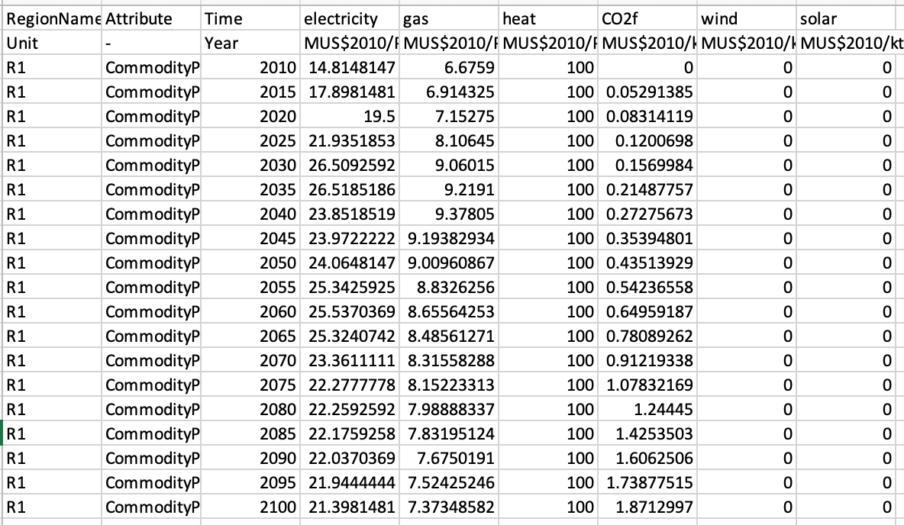
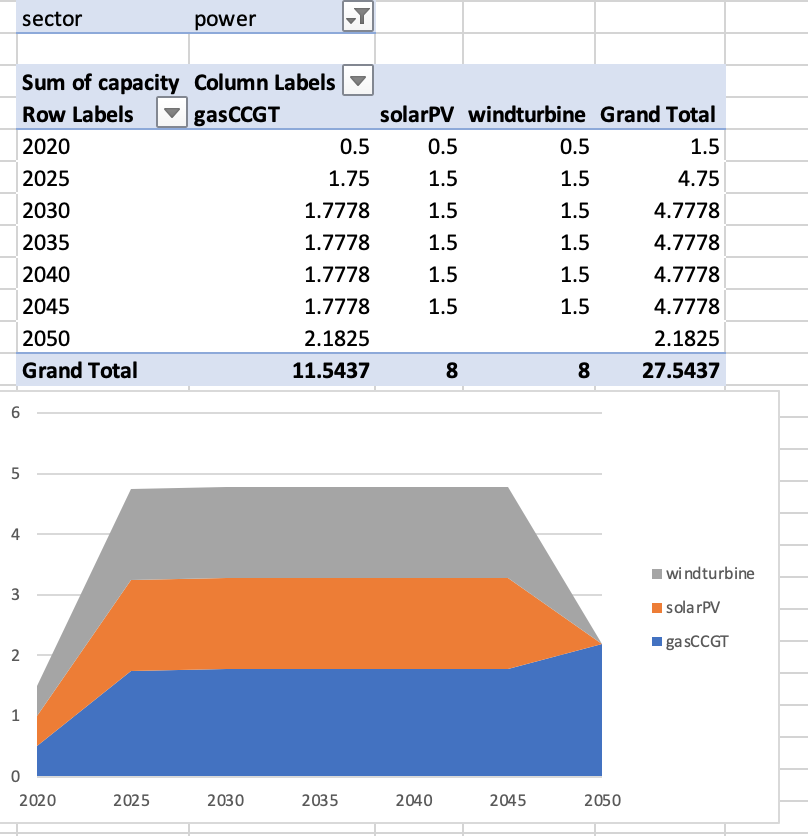

Hands-on accompanying video: https://youtu.be/d_KlS4QL5mw
In this section, we will add solar photovoltaics to the default model. We will be starting from scratch and not continuing with the examples from hands-on 2 and 3. Therefore, to achieve this, we must modify the input files in the default example (default.zip) which can be found in the zenodo link provided below.
https://zenodo.org/record/6092287#.YgvOEy-l1pQ
We must note, before starting, that we require consistency in input and output units. For example, if capacity is in PJ, the same basis would be needed for the output files CommIn.csv and CommOut.csv. In addition, across sectors a commodity needs to maintain the same unit. In these examples, we use the unit petajoule (PJ).
Next, we will edit the CommIn.csv file in the power sector, which specifies the commodities consumed by solar photovoltaics.
The table below shows the original CommIn.csv version in normal text, and the added column and row in bold.

Figure 4.1: Modified CommIn.csv file for the power sector
We must first add a new row at the bottom of the file, to indicate the new solar photovoltaic technology:
solarPVR1solarPV consumes solarAs the solar commodity has not been previously defined, we must define it by adding a column, which we will call solar. We fill out the entries in the solar column, ie. that neither gasCCGT nor windturbine consume solar.
We repeat this process for the file: CommOut.csv. This file specifies the output of the technology. In our case, solar photovoltaics only output electricity. This is unlike gasCCGT which also outputs CO2f, or carbon dioxide.

Figure 4.2: Modified CommOut.csv file for the power sector
Similar to the the CommIn.csv, we create a new row, and add in the solar commodity. We must ensure that we call our new commodity and technologies the same as the previous file for MUSE to successfully run, i.e. solar and solarPV. Please note that the commodity names are case-sensitive.
Please note that we use flat forward extension of the values when only one value is defined. For example, in the CommOut.csv we only provide data for the year 2020. Therefore for the benchmark years, 2025, 2030, 2035… we assume the data remains unchanged from 2020.
The next file to modify is the ExistingCapacity.csv file. This file details the existing capacity of each technology, per benchmark year. For this example, we will set the existing capacity to be 0.5 for all technologies in the base year and 0 for the remaining years. Please note, that the model interpolates between benchmark years linearly.

Figure 4.3: Modified ExistingCapacity.csv file for the power sector
Finally, the technodata.csv contains parametrisation data for the technology, such as the cost, growth constraints, lifetime of the power plant and fuel used. The technodata file is too long for it all to be displayed here, so we will truncate the full version.
Here, we will only define the parameters: processName, RegionName, Time, Level,cap_par, Fuel, EndUse, Agent2 and Agent1
We shall copy the existing parameters from the windturbine technology for the remaining parameters that can be seen in the technodata.csv file for brevity. You can see the full file at the zenodo link, below:
https://zenodo.org/record/6092287#.YgvOEy-l1pQ
Again, flat forward extension is used here. Therefore, as in this example we only provide data for the benchmark year 2020, 2025 and the following benchmark years will keep the same characteristics, e.g. costs, for each benchmark year of the simulation.

Figure 4.4: Modified Technodata.csv file for the power sector
Notice that we have hidden the cells between F and T. These are the same as the windturbine technology, but we’ve changed the cap_par input to 30 and the Fuel technology to solar.
Next, navigate to the input folder, found at:
{muse_installation_location}/src/muse/data/example/default/inputWe must now edit each of the files found here to add the new solar commodity. The edited files can be viewed in the zenodo link below:
https://zenodo.org/record/6092287#.YgvOEy-l1pQ
The BaseYearExport.csv file defines the exogenous exports for commodities. For our example we add a column to indicate that there is no export for solar. However, it is important that a column exists for our new commodity.
It is noted, however, that the BaseYearImport.csv as well as the BaseYearExport.csv files are optional files to define exogenous imports and exports; all values are set to zero if they are not used.

Figure 4.5: Modified BaseYearExport.csv file for the power sector
The BaseYearImport.csv file defines the imports in the base year. Similarly to BaseYearExport.csv, we add a column for solar in the BaseYearImport.csv file. Again, we indicate that solar has no imports.

Figure 4.6: Modified BaseYearImport.csv file for the power sector
The GlobalCommodities.csv file is the file which defines the commodities. Here we give the commodities a commodity type, CO2 emissions factor and heat rate. For this file, we will add the solar commodity, with zero CO2 emissions factor and a heat rate of 1.

Figure 4.7: Modified GlobalCommodities.csv file for the power sector
The projections.csv file details the initial market prices for the commodities. The market clearing algorithm will update these throughout the simulation; however, an initial estimate is required to start the simulation. As solar irradiance as a fuel is free, we will indicate this by adding a final column.
Please note that the unit row is not read by MUSE, but used as a reference for the user. The units should be consistent across all input files for MUSE; MUSE does not carry out any unit conversion.

Figure 4.8: Modified projections.csv file for the power sector
Now we are able to run our simulation with the new solar power technology.
To do this we run the same run command as previously in the anaconda command prompt:
python -m muse settings.tomlIf the simulation has run successfully, you should now have a folder in the same location as your settings.toml file called Results. It must be noted, however, that if you update a value and re-run the model, the results folder will be overwritten.
The next step is to visualise the results using Excel.
We will use the PivotChart, similar to that shown in hands-on 1. The file to be used is the MCACapacity.csv file. For our visualisation we have selected a stacked area chart, but you are free to choose the type you like.

Figure 4.9: Visualisation with new technology.
The power sector now shows us the new solarPV technology.